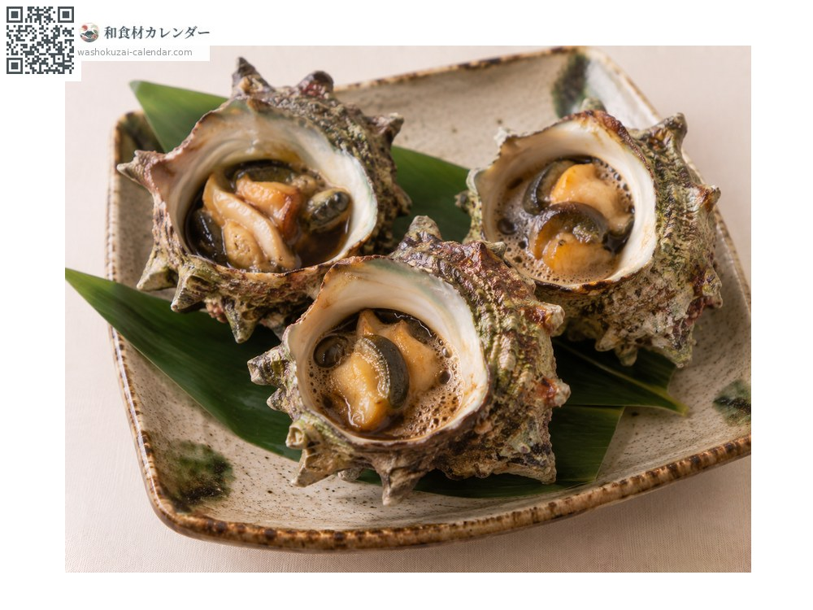
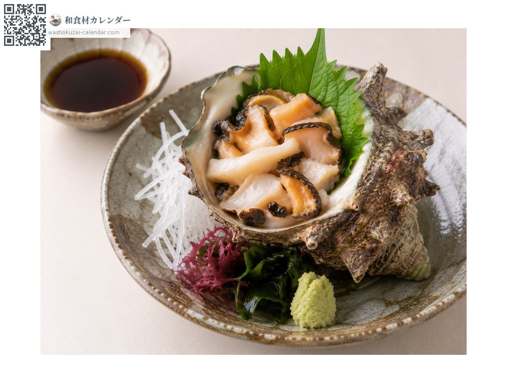
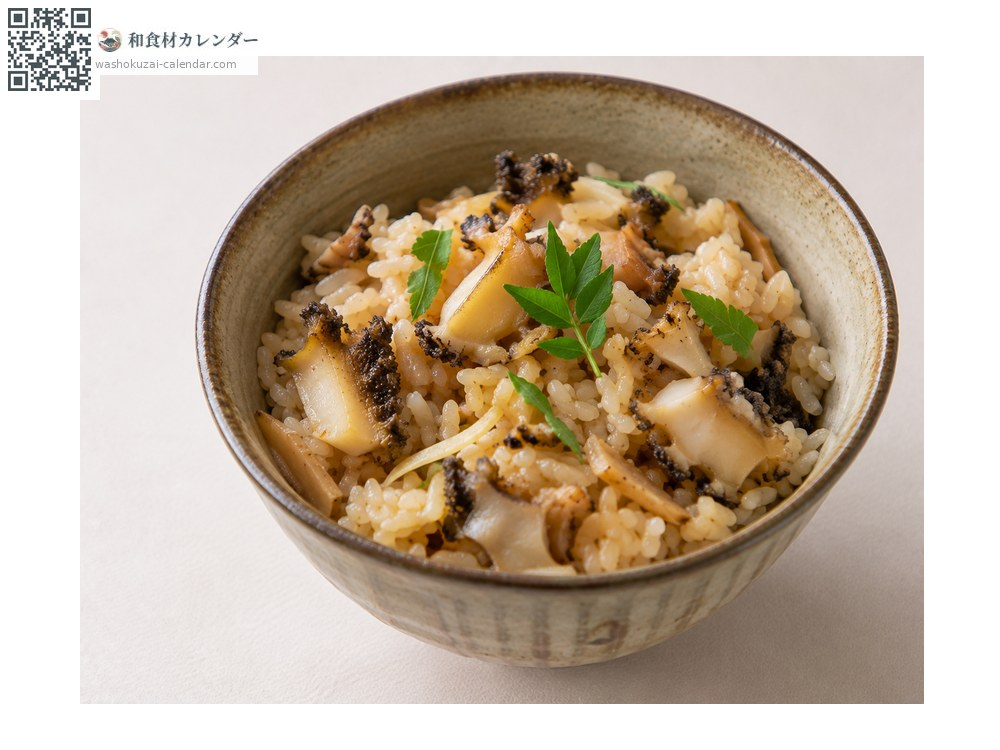
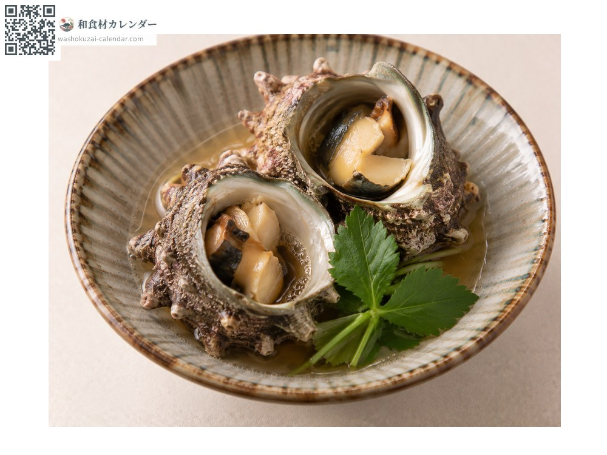

海鮮
蠑螺
サザエ さざえ sazae
別名sazae
當令時期為4月、5月、6月

當令時期
1月
2月
3月
4月
5月
6月
7月
8月
9月
10月
11月
12月
當令有供應
料理方式

連殼壺燒
連殼燒烤後滴上醬油。

生魚片
口感爽脆。

炊飯
切碎後與米同炊。

清酒蒸
以清酒快速蒸煮。
挑選方式
殼蓋緊閉、拿起來有重量感、碰觸會縮回。
保存方式
活的直接冷藏，用沾濕的報紙包起來更好。2至3天內用完。
主要產地
小知識
在浪大的外海長大的角較長，內海的角短或沒有。生長環境會反映在外形上。